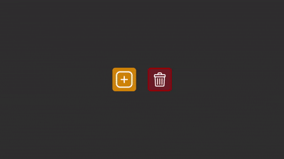
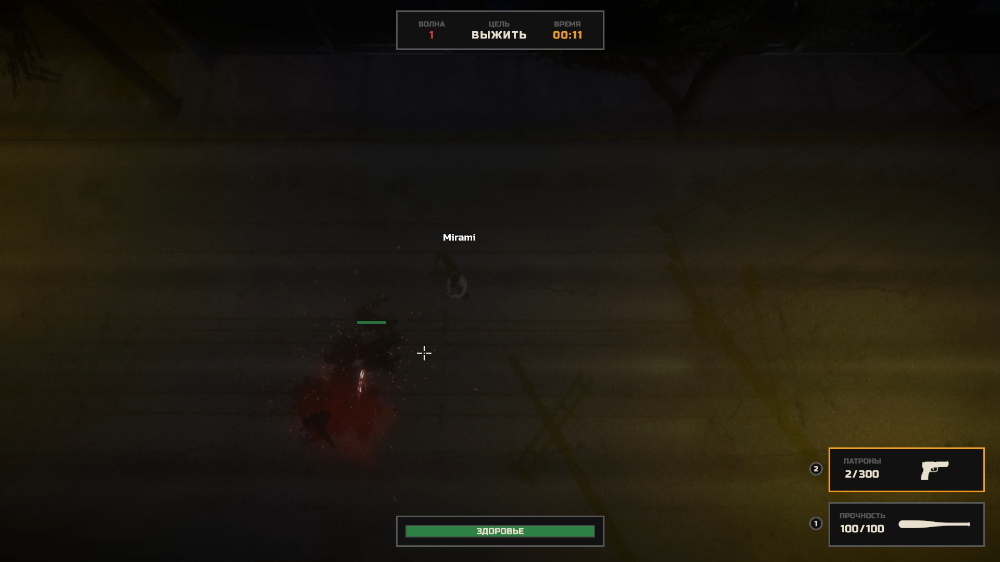

Unity Developer
Алексей
Пасечник
Разрабатываю игры и интерактивные приложения на Unity более 2-х лет. Специализируюсь на геймплейной логике, работе с UI и оптимизации проектов.
Опыт работы
Занимал должность преподавателя по направлению Unity разработки. Индивидуально обучал студентов работе с движком, написанию кода на C# и его отладке.
Проектная деятельность, совершенно разные задачи. Написание геймплейной логики, верстка и работа с UI, оптимизация проектов, подключение фреймворков, локализация, рефакторинг устаревших кодовых баз, разработка проектов и отдельных систем по ТЗ.
Проекты

01
Turn-Based RPG
Комплексная пошаговая RPG вдохновленная игрой "Stoneshard" с уклоном на боевую систему, исследование мира и развитие персонажа.
Реализованы системы: процедурной генерации мира, режимов игры (бой, путешествие, отдых), инвентаря и торговли, наград, экиперовки, статусных эффектов, области видимости, смерти и воскрешения игрока, AI через node-based редактор.

02
City Builder
Градостроительный симулятор с акцентом на поведение жителей, каждый из которых имеет как собственные базовые потребности, так и рабочие задачи в рамках поселения.
Реализованы системы: экономики, управления и производства ресурсов, строительства и улучшения зданий, загрузки/сохранения сессии, достижений, смены времени суток, управления камерой.

03
Tetris Inventory
Прототип игровой системы сеточного инвентаря, в которой предметы занимают произвольное количество ячеек и имеют собственную форму/ориентацию.
Реализованы системы: претаскивания предметов, генерации и стаков предметов по заданным правилам, всплывающих окон и подсказок, включения/выключения инвентарей, удаления предметов, индикации действий.

04
Multiplayer Roguelike
Кооперативный Top-Down рогалик с автоатакой для четырех игроков вдохновленный игрой "The Spell Brigade".
Образование